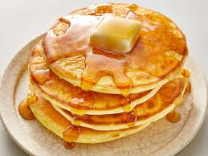

Pancakes

Description
Fluffy and delicious pancakes perfect for a hearty breakfast.
Ingredients
- 1 cup all-purpose flour
- 2 tablespoons sugar
- 1 tablespoon baking powder
- 1/2 teaspoon salt
- 1 cup milk
- 1 large egg
- 2 tablespoons melted butter
Instructions
- In a large bowl, whisk together the flour, sugar, baking powder, and salt.
- In another bowl, beat the egg and then whisk in the milk and melted butter.
- Pour the wet ingredients into the dry ingredients and stir until just combined. Do not overmix; some lumps are okay.
- Heat a non-stick skillet or griddle over medium heat and lightly grease it with butter or oil.
- Pour 1/4 cup of batter onto the skillet for each pancake. Cook until bubbles form on the surface and the edges look set, about 2-3 minutes.
- Flip the pancakes and cook for another 1-2 minutes, until golden brown and cooked through.
- Serve warm with your favorite toppings such as syrup, fresh fruit, or whipped cream.